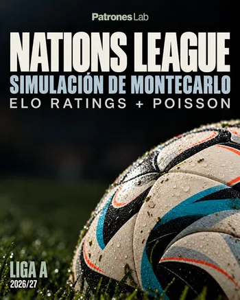

2026/27 赛季欧冠 · 积分预测
用泊松模型和蒙特卡洛法预测联赛阶段结束时的积分，展示中位数以及第 25–75 和第 5–95 百分位区间。
查看文章 ↗用泊松模型和蒙特卡洛法预测联赛阶段结束时的积分，展示中位数以及第 25–75 和第 5–95 百分位区间。
查看文章 ↗
截至第 3 轮，用泊松模型和蒙特卡洛法模拟 100 万次，追踪预测最终排名的变化。
查看文章 ↗
通过 100 万次蒙特卡洛模拟绘制的西甲各队最终排名预测热图。
查看文章 ↗
用泊松模型和蒙特卡洛模拟估算欧冠前八、进入附加赛和被淘汰的概率。
查看文章 ↗
比较各队 Elo 评分、预测积分与模拟结果区间。
查看文章 ↗
通过模拟积分的直方图，观察赛事中最常见的结果。
查看文章 ↗
利用百分位比较最终排名，展示最可能出现的排名区间。
查看文章 ↗
介绍用于预测赛果与排名的泊松模型和蒙特卡洛模拟。
查看文章 ↗
LinkedIn 上关于模拟的动态。具体内容待核实。
查看文章 ↗
各国家队预测排名随比赛轮次的变化。
查看文章 ↗
结合泊松进球模型与蒙特卡洛模拟预测欧冠赛果。
查看开发中的项目 ↗
比较各国家队的 Elo 评分与其在欧国联夺冠的估算概率。
查看文章 ↗
从小组赛至决赛，各阶段的晋级概率。
查看文章 ↗
介绍用于分析欧洲国家联赛各项概率的模拟模型。
查看文章 ↗
根据 AENA 公开数据分析巴利阿里群岛的航空活动。
查看文章 ↗
模拟小组第一、淘汰赛晋级和夺冠的概率。
查看项目 ↗
根据最新赛果和 Elo 评分更新最终排名概率。
查看文章 ↗
关于 2026/27 赛季西甲模拟的动态，详情待核实。
查看文章 ↗
模拟不同情景，估算西甲最终排名和赛季结果的概率。
查看开发中的项目 ↗
关于 2026/27 赛季西甲模拟情景的动态，详情待核实。
查看文章 ↗
将 DBSCAN 应用于交易数据，识别交易簇和异常交易。
查看文章 ↗
探索芝加哥出租车行程在时间、区域和经济方面的规律。
查看文章 ↗
对交易记录和欺诈相关信号进行分析的分类模型。
查看文章 ↗
介绍 Patrones Lab 的数据分析、建模和可视化项目。
查看文章 ↗
比较分类方法以研究天气事件经济损失的模型。
查看开发中的项目 ↗
通过供应商支出仪表板了解支出变化、类别和地域分布。
查看项目 ↗
通过 Spotify Charts 排行榜仪表板分析播放量、趋势和各国分布。
查看开发中的项目 ↗
更新世界杯夺冠概率和可能的决赛对阵。
查看文章 ↗
模拟世界杯四分之一决赛对阵及随后在淘汰赛中晋级的概率。
查看文章 ↗
估算闯入世界杯半决赛、进入决赛和夺冠的概率。
查看文章 ↗
根据 32 强赛结果更新晋级和夺冠概率。
查看文章 ↗
根据当时已知赛果预测各轮晋级概率。
查看文章 ↗
估算各国家队晋级和夺冠概率的模拟模型。
查看项目 ↗
按位置计算百分位，并按每 90 分钟统计指标，比较阿根廷球员。
查看文章 ↗
通过百分位雷达图比较卡塔尔世界杯球员的个人表现。
查看项目 ↗
分析阿根廷对法国的决赛中，有球动作如何改变进攻威胁。
查看文章 ↗从概率角度解读 2022 年卡塔尔世界杯阿根廷对法国一役的文章。
阅读文章 ↗
估算卡塔尔世界杯每次射门进球概率的模型。
查看项目 ↗分析 2022 年卡塔尔世界杯中有球动作产生的进攻威胁。
查看项目 ↗
通过交互式仪表板探索芝加哥上报的出租车行程需求与路线。
查看文章 ↗
基于开放数据绘制的芝加哥各地区行程集中度地图。
查看文章 ↗
分析芝加哥出租车的上下车区域、行程路线和空间聚集情况。
查看文章 ↗显示行程最密集区域和起终点之间流向的地图。
查看项目 ↗通过交互式仪表板探索芝加哥出租车的运营情况、车费和路线。
查看项目 ↗比较已上报行程在不同日期、时段、距离和车费区间的变化。
查看文章 ↗根据开放数据分析芝加哥出租车城市出行网络的文章。
阅读文章 ↗分析芝加哥上报的出租车行程的需求、路线与车费。
查看项目 ↗
根据位置、距市中心的距离和街区特征分析价格。
查看项目 ↗
在每种房型内部区分相对高价与低价房源的模型。
查看项目 ↗
比较伦敦 Airbnb 房源的价格与空间分布。
查看文章 ↗介绍伦敦 Airbnb 房价及其地理分布的文章。
阅读文章 ↗探索伦敦房源的价格、类型、可订情况和街区差异。
查看项目 ↗分析巴利阿里群岛各机场的客流量、航线连接情况与季节变化。
查看文章 ↗根据 AENA 开放数据解读巴利阿里群岛旅游业的文章。
阅读文章 ↗根据 AENA 公开数据分析马略卡、伊维萨和梅诺卡的航空交通。
查看项目 ↗通过基于密度的聚类，识别异常交易与潜在的欺诈模式。
查看项目 ↗对交易进行监督分类，以估算欺诈风险并解读相关信号。
查看项目 ↗
用 K-means 对交易分群，探索与欺诈相关的异常行为。
查看项目 ↗